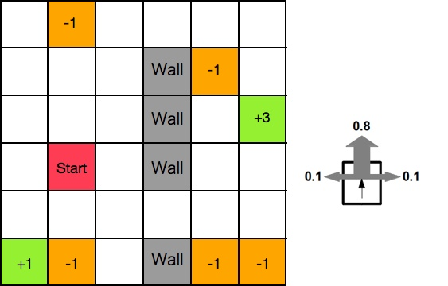
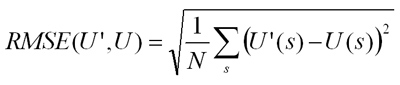

CS440 Fall 2015Assignment 4: Markov Decision Processes, Reinforcement Learning, and ClassificationThis is the last assignment in the course, covering topics from MDPs, to Reinforcement Learning, to classification with perceptrons and nearest neighbor. As usual, you can work in teams of up to three people (three-unit students with three-unit students, four-unit students with four-unit students).Contents
Part 1: MDPs and Reinforcement LearningCredit: Yiming Jiang, Codruta GirleaPart 1.1 (for everybody): Grid World MDPConsider the following environment, similar to the one in Section 17.1 of the textbook and in the class lecture: As in the textbook, the transition model is as follows: the intended outcome occurs with probability 0.8, and with probability 0.1 the agent moves at either right angle to the intended direction (see the figure above). If the move would make the agent walk into a wall, the agent stays in the same place as before. The rewards for the white squares are -0.04. Assuming the known transition model and reward function listed above, find the optimal policy and the utilities of all the (non-wall) states using value iteration or policy iteration for two scenarios:
For each scenario, display the optimal policy and the utilities of all the states, and plot utility estimates as a function of the number of iterations as in Figure 17.5(a) (for value iteration, you should need no more than 50 iterations to get convergence). In this question and the next one, use a discount factor of 0.99. Here are some reference utility values (computed with a different discount factor) to help you get an idea if the trend of your answers is correct. Part 1.2 (for everybody): Grid World Reinforcement LearningNow consider the reinforcement learning scenario in which the transition model and the reward function are unknown to the agent, but the agent can observe the outcome of its actions and the reward received in any state. (In the implementation, this means that the successor states and rewards will be given to the agent by some black-box functions whose parameters the agent doesn't have access to.)Use TD Q-learning, as in Section 21.3 and this lecture, to learn an action-utility function only for the terminal scenario described above. Experiment with different parameters for the exploration function f as defined in Section 21.3 and in the slides, and report which choice works the best. For the learning rate function, start with alpha(t) = 60/(59+t), and play around with the numbers to get the best behavior. In the report, plot utility estimates and their RMS error as a function of the number of trials (you will probably need several thousand), as in Figure 21.7. RMS stands for root mean squared error:  where U'(s) is the estimated utility of state s, U(s) is the "true" utility as determined by value iteration, and N is the number of states. Parts 1.1 and 1.2 extra credit
Report ChecklistPart 1:
Extra credit:
|